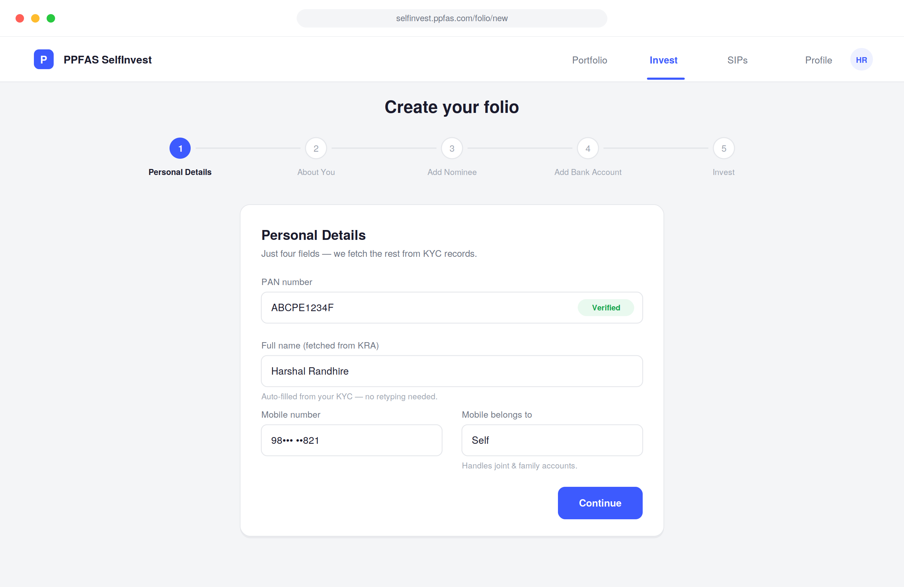
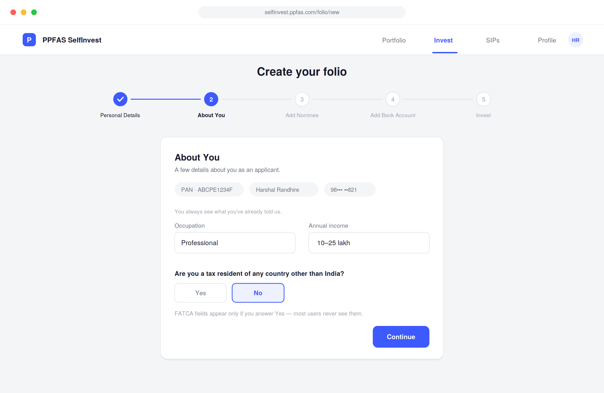
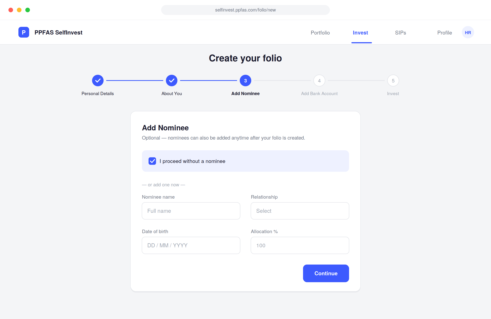
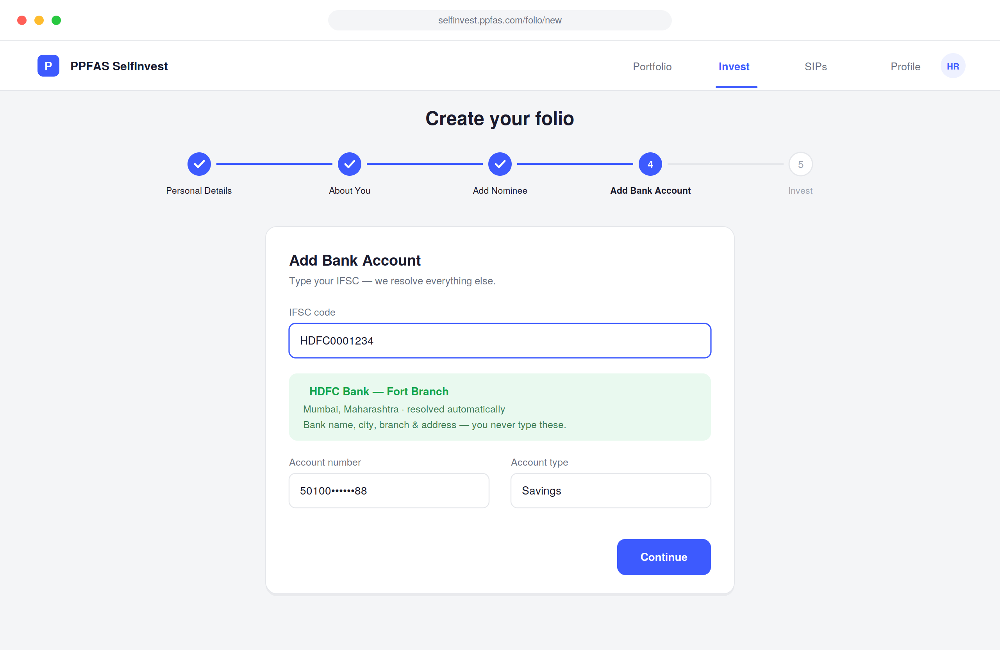
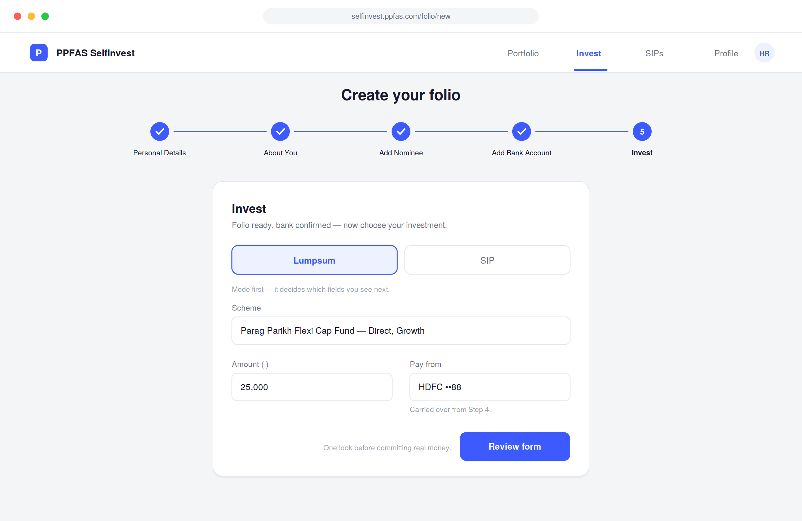

PPFAS SelfInvest · Web · 0→1 redesign · 8 min read
Folio creation was the first real thing a new investor did on our platform. It was also the most overwhelming. I redesigned it from a 9-section wall into a guided 5-step flow — without removing a single compliance requirement.
In development — not yet live. All screens are from the finalised design.I still remember the first time I tried to create a folio on our own platform. I work here. I know the product. And I was still confused.
The form loaded and just kept going. Nine sections, one page, no progress bar — PPFAS Mutual Fund, Applicant Details, Address, FATCA, Investment, Bank, Nominee, eNomination, Payment. The KYC verification auto-filled my name — a moment of relief — and then the full form was still sitting there.
Play Store reviews — a few users mentioned the form felt overwhelming. Not a flood, but a pattern. Internal team members — our own colleagues invest on the platform and felt it too. Competitive audit — other MF platforms had moved to guided step-by-step flows. We hadn't.
No formal drop-off data existed — that tooling is being integrated post-launch via Microsoft Clarity. We made a judgment call based on clear signals, not a spreadsheet.
I walked through the old form as a first-time investor — not as the designer who knew every field.
"PPFAS Mutual Fund" as a section title. Every other section had a descriptive heading. This one didn't.
I came to create an account. The form immediately asked which fund I wanted to invest in. Wrong moment.
A compliance question for overseas taxpayers — shown to all users, including those who'd just confirmed they're Indian residents.
Chose "Single holder" — three FATCA fields still showed. The form didn't respond to my selection at all.
Creating an account shouldn't ask how much I want to invest. That's a different decision entirely.
Nothing indicated nominees can be added after. Users felt trapped — fill it now or abandon.
The eNomination / 2FA step appeared out of nowhere in the middle. Jarring security interruption.
After Pay Now: did I create a folio? Invest? Both? The form never explained what completing it meant.
The instinct was to make it a stepper. The harder question was: which fields go in which step, and why? I did a competitive audit first, then sat with my manager and went through every field. For each one: why do we need this, and when does it actually make sense to ask?
User enters PAN — name fetches automatically from KRA. No retyping what the system already knows. "Mobile belongs to" handles joint and family accounts. Four fields. Done.

Previous step's data shown as chips at top — the user always sees what they've told us. FATCA is a single Yes/No inline question; if No, they skip it entirely. Only relevant users ever see the extra fields.

"I proceed without a nominee" is pre-checked. The user actively chooses to add one — not forced into it. Nominees can be added after folio creation; now users know that.

The original form had six bank fields. Here: type the IFSC and everything resolves — bank name, city, branch, address. The user only confirms account number and type.

Scheme selection appears last — because now it makes sense. Folio exists, bank confirmed, nominee decided. Lumpsum vs SIP comes first because it drives different fields. The final CTA is "Review Form" — one moment of confidence before committing real money.

Every compliance requirement is still there. What changed is when and how they appear — proportionate to the moment, not dumped all at once. Zero structural changes were needed post internal review. The flow held.
Post-launch, Microsoft Clarity will track drop-off by step and time-per-screen — measurement the previous version never had. This redesign builds the foundation for that.
No user testing before finalising the flow — I relied on my own walkthrough and competitor research. It surfaced real problems, but two or three sessions with actual first-time investors would have been better. As the sole designer, stress-testing assumptions early is the thing I keep learning to do sooner.